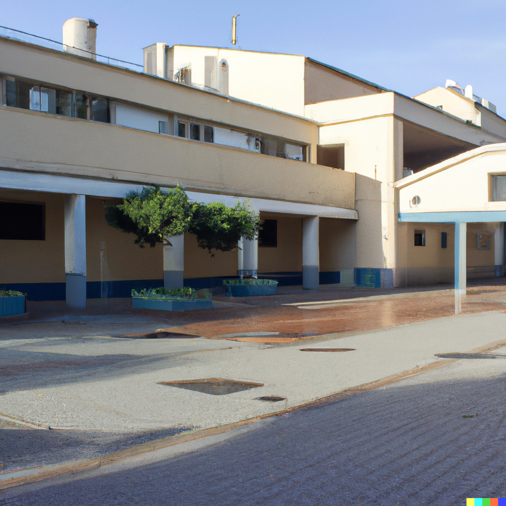
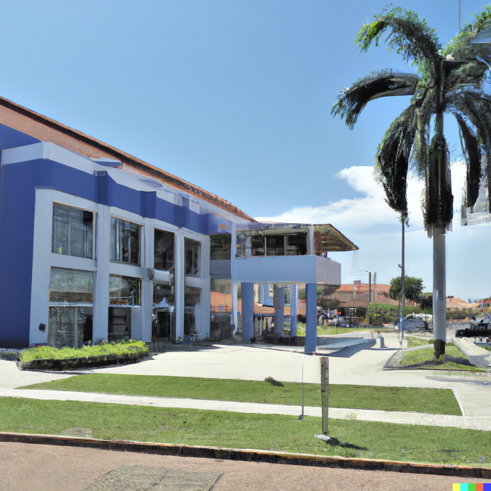
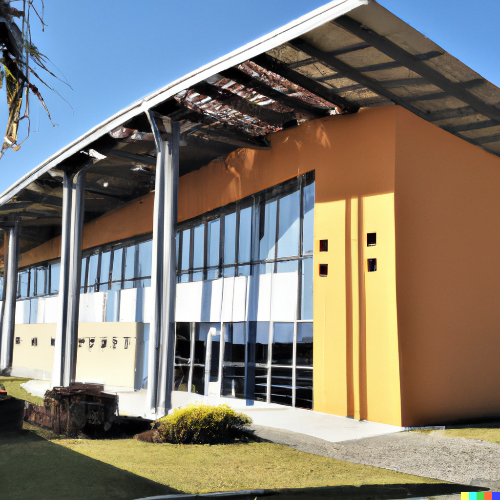
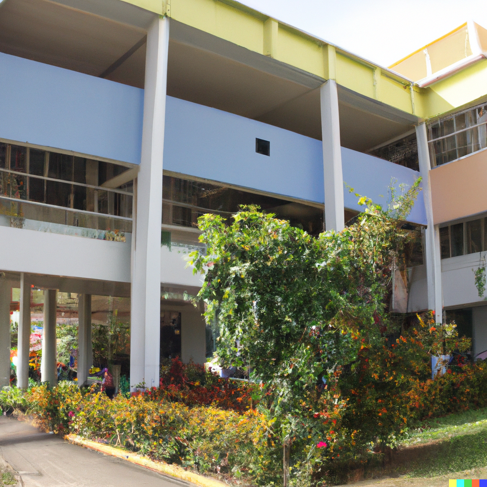
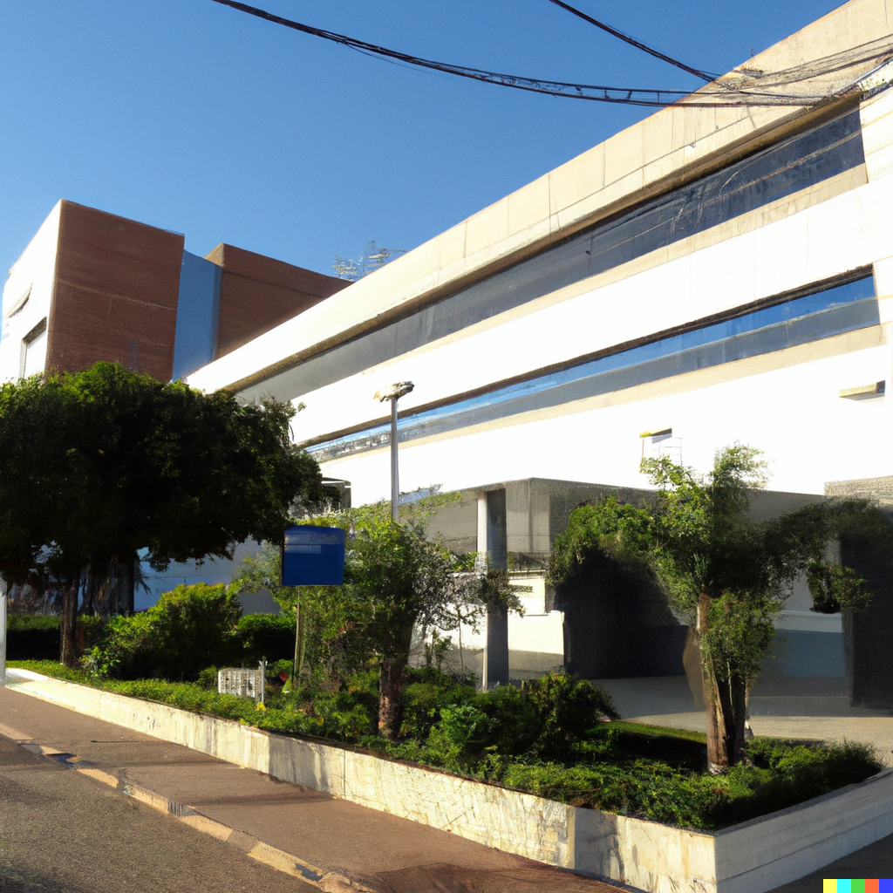
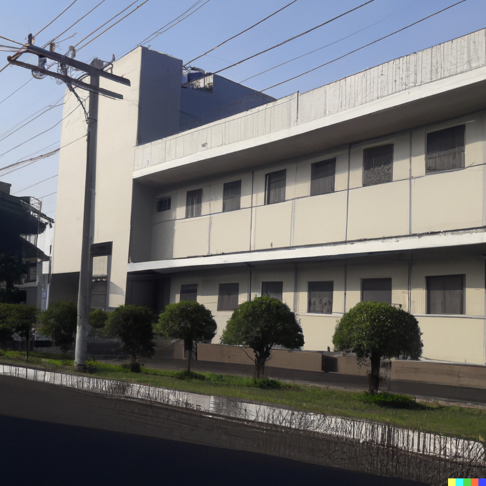

Salud Esperanza
Centro de salud Esperanza en C/Lope de vega,63 Granada
Teléfono: 953112407

Salud Real
Centro de salud Real en C/Real,42 Almeria
Teléfono: 952774411

Salud Vida
Centro de salud Vida en C/Principal,70 Cádiz
Teléfono: 975556314

Centro de salud Mar adentro en C/nueva,17 Torremolinos Málaga
Teléfono: 952223344
Salud Mar adentro
Centro de salud Mar adentro en C/nueva,17 Torremolinos Málaga
Teléfono: 952223344

Centro de salud en C/Traviata,20 Torremolinos Málaga
Teléfono: 952336644
Salud
Centro de salud en C/Traviata,20 Torremolinos Málaga
Teléfono: 952336644

Centro de salud Bienestar en C/Federico,17 Marbella Málaga
Teléfono: 954987741
Salud Bienestar
Centro de salud Bienestar en C/Federico,17 Marbella Málaga
Teléfono: 954987741

Centro de salud Oliva en C/Carretería,30 Jaén
Teléfono: 953554308
Salud Oliva
Centro de salud Oliva en C/Carretería,30 Jaén
Teléfono: 953554308

Centro de salud Bienestar en C/Conde San Isidro,56 Huelva
Teléfono: 952554680
Salud Bienestar
Centro de salud Bienestar en C/Conde San Isidro,56 Huelva
Teléfono: 952554680

Centro de salud Al-Andalus en C/San Rafael,127 Córdoba
Teléfono: 955758040
Salud Al-Andalus
Centro de salud Al-Andalus en C/San Rafael,127 Córdoba
Teléfono: 955758040
Salud Sevilla
Centro de salud Sevilla en C/Alfarería, 30 Sevilla
Teléfono: 956778899